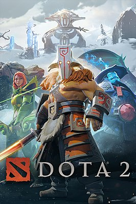
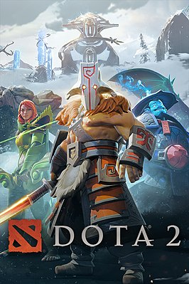

Dota 2 представляет собой многопользовательскую игру в жанре MOBA («многопользовательская онлайновая боевая арена»),
в которой сражаются две команды по пять игроков. Одна команда играет за светлую сторону (англ. The Radiant), другая — за тёмную (The Dire). Конечная цель каждого матча — уничтожить вражескую «крепость» (Ancient), особый объект, принадлежащий противнику, и защитить собственную крепость. Подобно Defense of the Ancients, Dota 2 использует управление с помощью мыши и клавиатуры, схожее с управлением в стратегиях в реальном времени, и вид с расстояния, имитирующий изометрическую проекцию.
Каждый из десяти участников матча управляет одним персонажем, который называется героем; игроки выбирают по одному из 123 героев, каждый из которых имеет свою узнаваемую внешность, слабые и сильные стороны, а также набор уникальных способностей, включая самую сильную из них — ультимативную. В ходе матча игрок выполняет определённую роль, как, например, «керри» (carry) или «саппорт» (support), и герои могут по своим характеристикам лучше подходить для той или иной роли. В течение матча герой может получать очки опыта, зарабатывать золото, покупать и собирать предметы, которые усиливают его или дают дополнительные способности. «Керри» в начале матча зачастую относительно слабы, но по мере набора очков опыта становятся сильнее и получают доступ к способностям, позволяющим им легко побеждать врагов и в конечном счёте добиться победы для всей команды. Способности «саппортов» позволяют оказывать помощь союзникам — например, повышать их защиту или восстанавливать потерянные очки здоровья. Если очки здоровья героя снижаются до нуля — например, его одолевает в бою вражеский герой — герой в течение некоторого короткого времени считается «погибшим»; по окончании этого времени герой вновь появляется рядом с фонтаном недалеко от своей крепости, и управляющий им игрок может возобновить игру. Уничтожение вражеского героя приносит его победителю значительное количество золота и очков опыта.
Каждый матч проходит на квадратной карте специального вида, где крепости обеих команд находятся в противоположных углах, а игроки рассредотачиваются по соединяющим эти крепости путям — «линиям» (lane). Помимо самих игроков, в игре принимают управляемые компьютером существа-«крипы» (creeps) и неподвижные строения-«башни» (towers), свои с каждой стороны; они также участвуют в сражении, атакуя героев и крипов противника, тем самым помогая «своей» команде. Туман войны, покрывающий большую часть карты, не позволяет игрокам следить за передвижениями противника.
 
